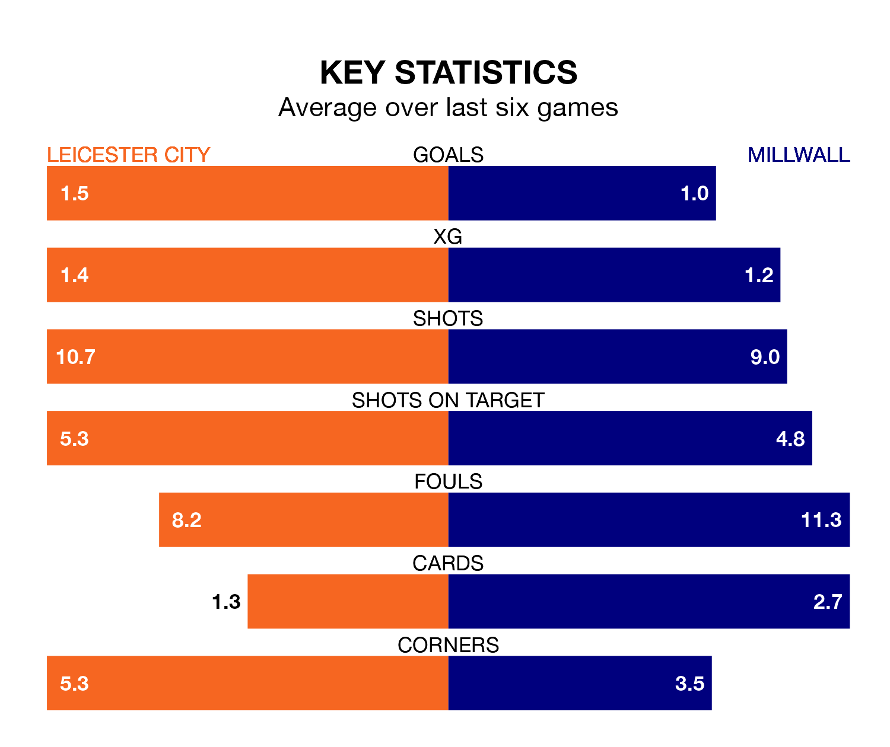

Leicester City are heavy favourites to keep all three points at home in Wednesday's late kick-off against Millwall.
The Foxes, who sit top of the Championship with 20 games played, are priced at 1.4 to seal victory at the King Power Stadium.
Sitting 18 places and 28 points behind them in the table, Millwall are 7.0 to win with *Betting Company*, while the draw is at 4.5.
With 38 goals in 20 games so far this season, Leicester are the league's second-highest scorers with 1.9 goals per game. And they are conceding fewer than average, letting in 12 goals at a rate of 0.6 per game.
Millwall, meanwhile, are below average scorers, with 1.0 goal per game, compared to a league average of 1.4. They have conceded 1.4 goals per game.
With Mads Hermansen between the sticks, City can rely on one of the league's safest pair of hands. He has kept seven clean sheets in his 19 appearances this season, and only one other 'keeper – West Bromwich Albion's Alex Palmer – has been able to prevent the opposition scoring on more occasions in the Championship.
In the Lions' net, Bartosz Bialkowski has four clean sheets in 14 games. He has conceded a goal every 66 minutes, more than twice as often as the 155 minutes between goals for Hermansen.
The Foxes are in mixed form in the Championship, with three wins and a draw from their last six games.
With a win and a draw over that period, the away side's form is much worse – they have taken four points from 18, compared to the hosts' 10.
Leicester's last match was on Saturday, a 4-0 win against Plymouth Argyle, with Stephy Mavididi (two), Patson Daka and Wilfred Ndidi getting the goals for the Foxes.
Millwall lost 1-0 against Cardiff City last time out, also on Saturday.
Wednesday's match will be refereed by Keith Stroud, who has taken charge of nine Championship games so far this season, issuing one red card and booking 50 players. He has not awarded any penalties.
The last Leicester game Stroud refereed was a 1-0 home win against Sunderland on October 24. His last Millwall match was their 2-2 draw away at Watford on October 28.
